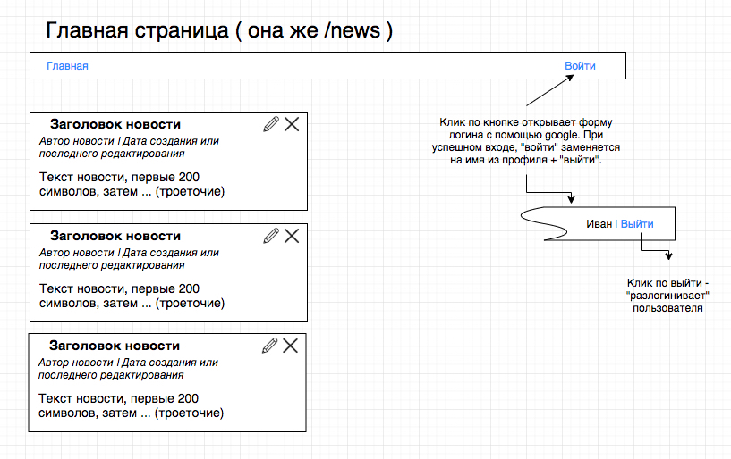
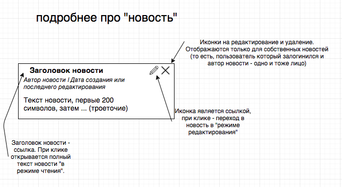
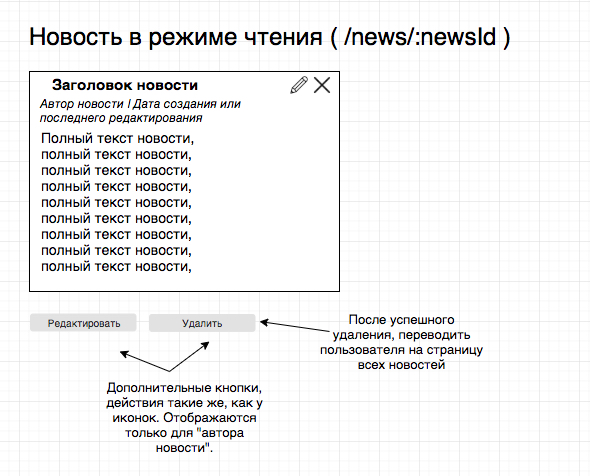
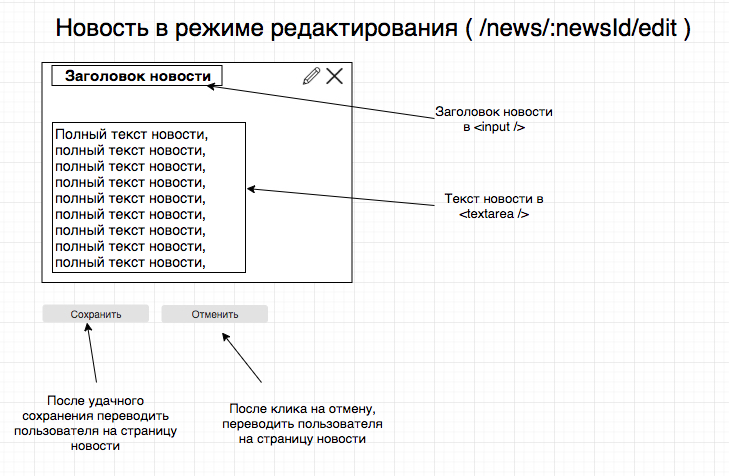

Подробнее:
Cтандартное CRUD-приложение с возможностью войти через google аккаунт. Если пользователь залогинился — он может создавать новости. Так же пользователь может редактировать и удалять только свои новости.
Стек технологий:
- vuejs
- vuex
- vue-router
Дополнительно вы можете использовать любые библиотеки.
Задача:
Продемонстрировать знание VueJs, умение работать с API.
В качестве тествого проекта предлагается сделать ленту новостей.
Приложение должно поддерживать следующие роуты:
/news— главная страница приложения, отображает список всех новостей от всех пользователей;/news/:newsId— страница новости в режиме чтения/news/:newsId/edit— страница новости в режиме редактирования
Для авторизации, нужно использовать Google Sign In.
Подробности работы приложения приведены на мокапе (прототипе макета):




Для работы, потребуется бэкэнд (https://bitbucket.org/i-d-c/frontendtesttask/src) (все инструкции в README проекта)
Для просмотра доступных API-маршрутов (endpoints), вы можете использовать Swagger. Ссылка на офф. документацию
Для выполнения запросов, которые требуют id пользователя, вам потребуется передавать заголовок x-access-token
Отправка на ревью:
- Вы должны выложить проект на github или bitbucket со следующим README.
- Прислать на info@itdevelopcorp.com с темой «Тестовое задание FrontEnd»
Выполнение всех пунктов не является обязательным условием, но чем больше вы сделали, тем вы круче.